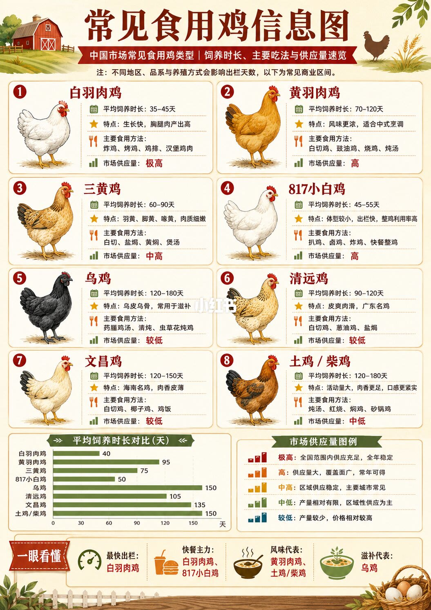

1/1
八种鸡：出栏越快，供给越高
整篇笔记只有这一张信息图，标题是「常见食用鸡信息图」。正文说明先按饲养时间、特点和主要做法扫一眼，并提醒市场天数不是固定值。
白羽肉鸡约 35–45 天出栏，胸腿肉多，供给标成极高，做法指向炸鸡、烤鸡、鸡排和汉堡肉。黄羽肉鸡约 70–120 天，味道更足，适合白切、酱油鸡、烤鸡和炖汤，供给高。三黄鸡约 60–90 天，黄羽黄脚黄喙，肉嫩，做法是白切、盐焗、黄焖和汤，供给中高。817 小白鸡约 45–55 天，体型小、整鸡利用率高，用于扒鸡、卤鸡、炸鸡和快餐整鸡，供给高。
乌鸡约 120–180 天，皮骨发黑，图上把它放在药膳汤、清炖和虫草花炖，供给较低。清远鸡约 90–120 天，标注为广东名种，皮脆肉嫩，白切、葱油鸡、盐焗，供给较低。文昌鸡约 120–150 天，海南名种，皮薄肉香，白切、椰子鸡、海南鸡饭，供给较低。土鸡/柴鸡约 120–180 天，活动多所以肉紧有味，炖汤、红烧、焖、砂锅，供给中低。
图下的天数对照大约是：白羽约 40 天，817 约 50 天，三黄约 75 天，黄羽约 95 天，清远约 105 天，文昌约 135 天，乌鸡和土鸡都到约 150 天。供给图例把「极高」解释成全国货多、全年稳定，「较低」解释成产量少、价格相对高。页脚口诀是：出栏最快看白羽，快餐主力是白羽和 817，风味看黄羽和土鸡，滋补看乌鸡。

汇总
先看天数，再对做法
这一页的判断是：出栏越短，越常进快餐和分割肉；养得越久，越常被写成汤、白切和地方名菜，货也更少。天数和供给都是图上的常见商品区间，不是某一只鸡的检测报告。清远、文昌写成「名种」，没有在这张图上给出产地认证或价格。